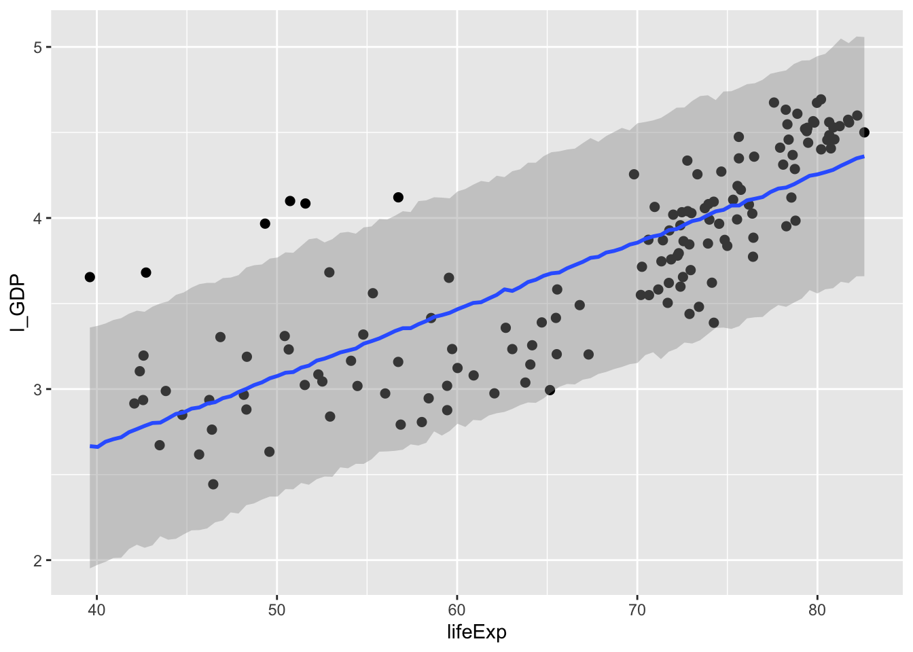
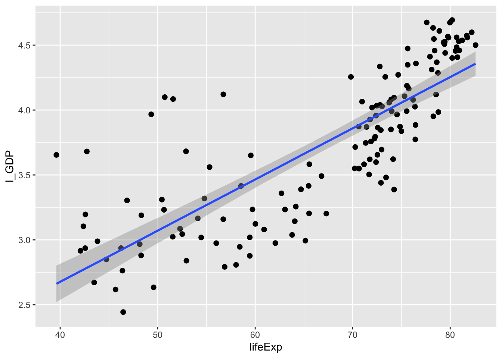
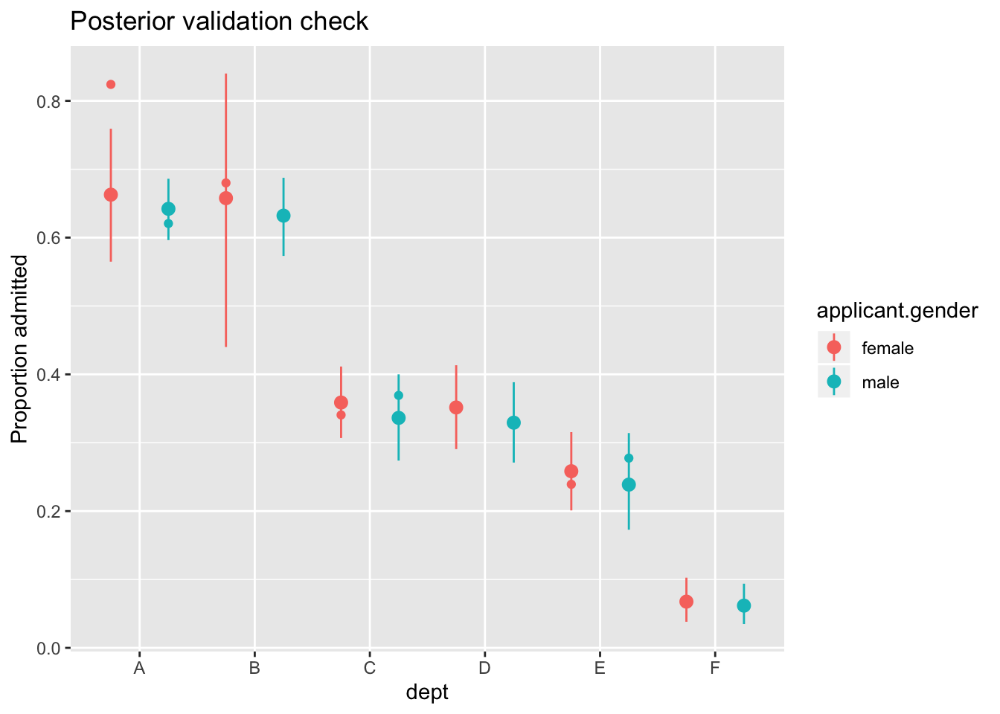
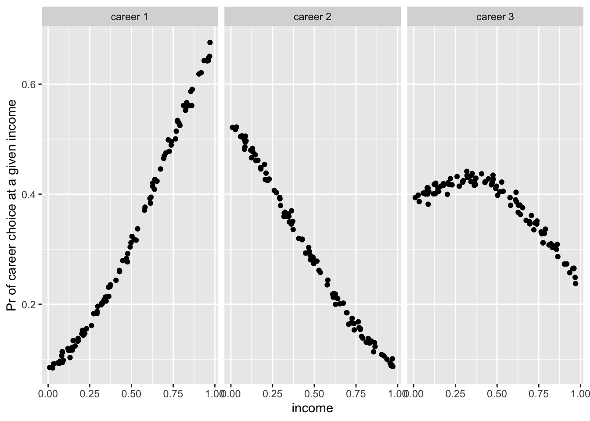

21 Brms mudelid
21.1 Robustne lineaarne regressioon
Kasutame dnorm likelihoodi asemel studenti t jaotust. Selle jaotuse õlad on reguleeritavalt kõrgemad ja nende alla mahuvad paremini outlierid. Õlgade kõrgust reguleerib parameeter nu (1 - Inf), mille väiksemad väärtused (<10) annavad laiad õlad ja kaitse outlierite vastu. Me anname nu-le gamma priori. Sellel prioril on omakorda 2 parameetrit, shape ja scale. Kui shape = 4 ja scale = 1, siis saame kitsa priori, mis eelistab nu väärtusi, mis soosivad laiu õlgu ja robustset regressiooni.
x = seq(from = 0, to = 20, by = .1)
y = dgamma(x, shape = 4, scale = 1)
plot(y ~ x)
get_prior(Sepal.Length ~ Petal.Length, data = iris, family = "student")
#> prior class coef group resp dpar nlpar bound
#> 1 b
#> 2 b Petal.Length
#> 3 student_t(3, 6, 10) Intercept
#> 4 gamma(2, 0.1) nu
#> 5 student_t(3, 0, 10) sigmaprior <- prior(gamma(4, 1), class = "nu")robust_m1 on studenti likelihoodiga, mille õlgade kõrgus fititakse adaptiivselt andmete põhjal. robust_m2-s anname õlgade laiuse ette ja robust_m3 on mitte-robustne kontroll tavalise normaalse likelihoodiga.
robust_m1 <- brm(Sepal.Length ~ Petal.Length,
data = iris,
family = "student",
prior = prior)
robust_m2 <- brm(bf(Sepal.Length~Petal.Length, nu = 4),
data = iris,
family = student,
prior = c(prior(normal(0, 100), class = Intercept),
prior(normal(0, 10), class = b),
prior(student_t(5, 0, 5), class = sigma)))
robust_m3 <- brm(Sepal.Length~Petal.Length,
data = iris,
family = "gaussian")
write_rds(robust_m1, path = "data/robust_m1.fit")
write_rds(robust_m2, path = "data/robust_m2.fit")
write_rds(robust_m3, path = "data/robust_m3.fit")b_estimates <- bind_rows(tidy(robust_m1),
tidy(robust_m2),
tidy(robust_m3),
.id = "model_nr")
b1 <- filter(b_estimates, str_detect(term, "b_P")) %>%
ggplot(aes(model_nr, estimate)) +
geom_pointrange(aes(ymin = lower, ymax = upper)) +
coord_flip() +
labs(x = "Model nr", title = "slopes")
b2 <- filter(b_estimates, str_detect(term, "b_I")) %>%
ggplot(aes(model_nr, estimate)) +
geom_pointrange(aes(ymin = lower, ymax = upper)) +
coord_flip() +
labs(x = NULL, title = "intercepts")
gridExtra::grid.arrange(b1, b2, nrow = 1)
Kolme mudeli lõikepunktid ja tõusunurgad on sisuliselt võrdsed ja sama täpsusega hinnatud. Seega ei tee robustne mudel vähemal halba, kui meil on enam-vähem normaalsed andmed.
Proovime ka robuststet versiooni 2 grupi võrdlusest (vastab t testile, kus kahe grupi sd-d hinnatakse eraldi)
no_versicolor <- filter(iris, Species != "versicolor")
get_prior(bf(Sepal.Length ~ Species, sigma ~ Species),
data = no_versicolor,
family = "student")
#> prior class coef group resp dpar nlpar
#> 1 b
#> 2 b Speciesvirginica
#> 3 student_t(3, 6, 10) Intercept
#> 4 gamma(2, 0.1) nu
#> 5 b sigma
#> 6 b Speciesvirginica sigma
#> 7 student_t(3, 0, 10) Intercept sigma
#> bound
#> 1
#> 2
#> 3
#> 4
#> 5
#> 6
#> 7prior <- c(prior(gamma(4, 1), class = "nu"),
prior(normal(0, 4), class = "b"))robust_t_test1 <- brm(bf(Sepal.Length ~ Species, sigma ~ Species),
data = no_versicolor,
prior = prior,
family = "student")
write_rds(robust_t_test1, path = "data/robust_t_test1.fit")tidy(robust_t_test1)
#> term estimate std.error lower upper
#> 1 b_Intercept 5.002 0.0505 4.916 5.086
#> 2 b_sigma_Intercept -1.175 0.1281 -1.383 -0.970
#> 3 b_Speciesvirginica 1.557 0.1032 1.387 1.726
#> 4 b_sigma_Speciesvirginica 0.577 0.1694 0.298 0.846
#> 5 nu 6.113 2.0334 3.337 9.874
#> 6 lp__ -79.991 1.5766 -82.954 -78.063b_Intercept on hinnang 1. grupi keskväärtusele (algses skaalas)
b_Speciesvirginica on hinnag efekti suurusele, ehk 2. grupi erinevusest esimesest grupist (algses skaalas)
b_Intercept + b_Speciesvirginica annab 2. grupi keskväärtuse.
b_sigma_Intercept on naturaallogaritm 1. grupi sd-st.
exp(-1.175)
#> [1] 0.309Tegelik sigma on 0.3
b_sigma_Speciesvirginica on logaritm 2. grupi (I. virginica) sd erinevusest esimesest grupist (ehk efekti suurus).
exp(-1.175 + 0.577)
#> [1] 0.55Seega saab algses skaalas sd-d nii:
exp(b_sigma_Intercept) = 1. grupi sd
exp(b_sigma_Intercept) + exp(b_sigma_Speciesvirginica) = 2. grupi sd
exp(b_sigma_Speciesvirginica) = sd-de erinevus
Nii arvutame 2. grupi keskväärtuse posteeriori
r_1_df <- posterior_samples(robust_t_test1)
mean_2.gr <- r_1_df$b_Intercept + r_1_df$b_Speciesvirginica
ggplot(data = NULL) + geom_density(aes(mean_2.gr))Nii saab tekitada usaldusinetvalle, mis katavad 90% jaotuse alusest kõrgeimast tihedusest (mis ei ole päris sama, mis kvantiilide meetod)
rethinking::HPDI(mean_2.gr, prob = 0.9)
#> |0.9 0.9|
#> 6.4 6.7quantile(mean_2.gr, probs = c(0.05, 0.95))
#> 5% 95%
#> 6.41 6.71Nii saame teada, milline osa (fraktsioon) posteeriorist on väiksem kui 6.4
mean(mean_2.gr < 6.4)
#> [1] 0.0372Asendades eelnevas koodis 6.4 nulliga saame bayesi versiooni ühepoolsest p väärtusest hüpoteesile, et teise grupi keskväärtus on null.
Avaldame posteeriori 2. grupi sd-e
sd_2.gr <- exp(r_1_df$b_sigma_Intercept) + exp(r_1_df$b_sigma_Speciesvirginica)
ggplot(data = NULL) +
geom_density(aes(sd_2.gr))On tavaline, et sd-de posteeriorid ei ole normaaljaotusega (selle kohta vaata lähemalt Statistical Rethinking raamatust).
t.test(Sepal.Length ~ Species, data = no_versicolor)
#>
#> Welch Two Sample t-test
#>
#> data: Sepal.Length by Species
#> t = -15, df = 77, p-value <2e-16
#> alternative hypothesis: true difference in means is not equal to 0
#> 95 percent confidence interval:
#> -1.79 -1.38
#> sample estimates:
#> mean in group setosa mean in group virginica
#> 5.01 6.59Klassikalise t testi efekti suuruse CI on 1.38 … 1.79 robustse t testi oma on 1.39 … 1.73
Simuleerime siis ühe tõsiste outlieritega andmestiku, et vaadata kas meil õnnestub päästa efekt statistilise mitteolulisuse õnnetust saatusest. Meil on a grupis 30 andmepunkti normaaljaotusest mu = 0, sd = 1 ja b grupis 25 andmepunkti normaaljaotusest mu = 1, sd = 1.5, pluss 5 andmepunkti, mis mängivad outliereid.
set.seed(123)
df1 <- tibble(a = rnorm(30), b = c(rnorm(25, 1, 1.5), 4.3, 5.3, 7, -8.1, -17)) %>% gather()
ggplot(df1, aes(value, fill = key)) +
geom_histogram(alpha = 0.7, position = "identity", bins = 30)
robust_t_test2 <- brm(bf(value~key, sigma ~ key),
data = df1,
family = "student",
prior = prior(gamma(4, 1), class= "nu"))
write_rds(robust_t_test2, path = "data/robust_t_test2.fit")tidy(robust_t_test2)
#> term estimate std.error lower upper
#> 1 b_Intercept -0.0961 0.188 -0.410 0.2049
#> 2 b_sigma_Intercept -0.2372 0.192 -0.557 0.0689
#> 3 b_keyb 1.4340 0.405 0.776 2.0979
#> 4 b_sigma_keyb 0.6312 0.287 0.164 1.0979
#> 5 nu 2.8096 0.952 1.585 4.6058
#> 6 lp__ -124.5835 1.718 -128.006 -122.5280t.test(value ~ key, data = df1)
#>
#> Welch Two Sample t-test
#>
#> data: value by key
#> t = -1, df = 32, p-value = 0.3
#> alternative hypothesis: true difference in means is not equal to 0
#> 95 percent confidence interval:
#> -2.417 0.777
#> sample estimates:
#> mean in group a mean in group b
#> -0.0471 0.7729Nüüd kus meil on outlieritega andmed, annab klassikaline t test efekti suurusele CI -2.41 … 0.78 (p = 0.3), aga robustne t test leiab efekti üles - CI 0.78 … 2.10 [tegelik ES oleks 1, outliereid arvestamata].
Ilma outlieriteta versioon annab p = 0.00006
set.seed(123)
a = rnorm(30)
b = c(rnorm(25, 1, 1.5))
t.test(a, b)$p.value
#> [1] 6.37e-05Kui tavaline t test annab välja kahe grupi keskmised, usaldusintervalli nende erinevusele (ehk ES-le) ja p väärtuse, siis bayesi variant annab välja 2 grupi keskväärtused, 2 grupi varieeruvused andmepunktide tasemel ning kõik efekti suurused ja hüpoteesitestid, millest te suudate unistada. Selle külluse põhjus on, et hinnang iga parameeteri väärtusele tuleb meile posteeriori ehk tõenäosusjaotuse kujul. Kuna iga posteerior on meil arvutis olemas kui arvuline vektor, ja teatavasti saab vektoritega teha aritmeetilisi tehteid, siis saab ka posteerioreid omavahel liita, lahutada, astendada jms. Teoreetiliselt sisaldab posteerior kogu infot, mis meil vastava parameetri väärtuse kohta on. Me ei vaja midagi enamat, et teha kõiki järeldusi, mida me selle parameetri väärtuse kohta üldse teha saame. Seetõttu on bayesi versioon mitte ainult palju paindlikum kui tavaline t test, vaid selle output on ka hästi palju informatiivsem.
Igaks juhuks tuletame meelde, et tavaline t test (küll versioonis, kus võrreldavate gruppide varieeruvused on eeldatud olema identsed) on ekvivalentne lineaarse regressiooniga, mille siin fitime vähimruutude meetodiga. (Väheinformatiivsete prioritega bayesi versioon normaaljaotuse likelihoodiga annaks sellega väga sarnase fiti.)
lm1 <- lm(value ~ key, data = df1)
tidy(lm1)
#> # A tibble: 2 x 5
#> term estimate std.error statistic p.value
#> <chr> <dbl> <dbl> <dbl> <dbl>
#> 1 (Intercept) -0.0471 0.554 -0.0850 0.933
#> 2 keyb 0.820 0.784 1.05 0.300p = 0.3 ongi vastava t testi põhiväljund.
21.2 lognormaalne tõepärafunktsioon
Sama näide on pikemalt 14. peatükis, seal küll lahendatud rethinkingu abil.
library(gapminder)
library(rethinking)
g2007 <- gapminder %>%
filter(year == 2007) %>%
mutate(l_GDP = log10(gdpPercap))
Joonis 21.1: SKP-de jaotus
get_prior(gdpPercap~lifeExp, family = "lognormal", data=g2007)
#> prior class coef group resp dpar nlpar bound
#> 1 b
#> 2 b lifeExp
#> 3 student_t(3, 9, 10) Intercept
#> 4 student_t(3, 0, 10) sigmaprior <- c(prior(normal(0, 10), class = "Intercept"),
prior(normal(0,10), class = "b"),
prior(student(6, 0, 5), class = "sigma"))ln_m1 <- brm(gdpPercap ~ lifeExp, family = "lognormal", prior = prior, data = g2007, cores = 4)
write_rds(ln_m1, "ln_m1.rds")tidy(ln_m1)
#> term estimate std.error lower upper
#> 1 b_Intercept 2.53e+00 0.3891 1.88e+00 3.162
#> 2 b_lifeExp 9.09e-02 0.0057 8.15e-02 0.100
#> 3 sigma 8.08e-01 0.0504 7.30e-01 0.895
#> 4 lp__ -1.40e+03 1.2649 -1.40e+03 -1398.543plot(marginal_effects(ln_m1), points = TRUE)plot(marginal_effects(ln_m1, method = "predict"), points = TRUE)
ln_m2 <- brm(l_GDP~lifeExp, data=g2007, cores=4)
write_rds(ln_m2, "ln_m2.rds")ln_m2 <- read_rds("data/ln_m2.rds")plot(marginal_effects(ln_m2, method="predict"), points=TRUE)
bayes_R2(ln_m1)
#> Estimate Est.Error Q2.5 Q97.5
#> R2 0.587 0.0767 0.429 0.727bayes_R2(ln_m2)
#> Estimate Est.Error Q2.5 Q97.5
#> R2 0.652 0.0277 0.59 0.698plot(marginal_effects(ln_m2), points=TRUE)
21.3 Puuduvate andmete imputatsioon
Regressioonimudelite fittimisel kasutatakse ainult vaatlusi, kus esinevad väärtused kõigis mudelisse pandud muutujates. Seega, kui meil on palju muutujaid, milles igaühes puuduvad juhuslikult mõned väärtused, siis kaotame kokkuvõttes enamuse oma valimist. Aitab puuduvate andmete imputatsioon, mis tegelikult tähendab, et me fitime iga puuduvaid andmeid sisaldava muutuja eraldi regressioonimudelis kõigi teiste muutujate vastu.
Eriti vajalik, kui andmed ei puudu juhuslikult!
Viskame irise andmestiku kahest tulbast välja 1/4 andmepunkte, aga mitte juhuslikult vaid kõik madalamad väärtused. Selline suunatud tegevus kallutab (ehk suunab kindlas suunas) oluliselt mudeldamise tulemusi
quantile(iris$Petal.Length)
#> 0% 25% 50% 75% 100%
#> 1.00 1.60 4.35 5.10 6.90
iris_na <- iris
iris_na$Sepal.Length[iris_na$Sepal.Length < 5] <- NA
iris_na$Petal.Length[iris_na$Petal.Length < 1.6] <- NAlm(Petal.Length ~ Sepal.Length, data = iris) %>% tidy()
#> # A tibble: 2 x 5
#> term estimate std.error statistic p.value
#> <chr> <dbl> <dbl> <dbl> <dbl>
#> 1 (Intercept) -7.10 0.507 -14.0 6.13e-29
#> 2 Sepal.Length 1.86 0.0859 21.6 1.04e-47lm(Petal.Length ~ Sepal.Length, data = iris_na) %>% tidy()
#> # A tibble: 2 x 5
#> term estimate std.error statistic p.value
#> <chr> <dbl> <dbl> <dbl> <dbl>
#> 1 (Intercept) -4.19 0.609 -6.89 4.33e-10
#> 2 Sepal.Length 1.43 0.0976 14.6 4.53e-27imputeerime enne mudeli fittimist kasutades multiple imputation meetodit mice paketist https://stefvanbuuren.name/mice/. Siin imputeerime iga puuduva väärtuse kasutades kõigi teiste parameetrite väärtusi, ja me teeme seda 5 korda.
library(mice)
imp <- mice(iris_na, m = 5, print = FALSE)Meil on nüüd 5 imputeeritud andmesetti. Me saadame need kõik brms-i.
Siin kasutame mice() tema vaikeväärtustel, kuid mice pakett on tegelikult vägagi rikkalik imputatsioonimasin, mille helpi ja tutoorialeid tuleks kindlasti enne lugeda, kui oma andmeid imputeerima asuda. Lisaks, see raamat on tervenisti pühendatud imputatsioonile: https://stefvanbuuren.name/fimd/
iris_imp1 <- brm_multiple(Petal.Length ~ Sepal.Length, data = imp)
write_rds(iris_imp1, path = "data/iris_imp1.fit")Saame tavalise fitiobjekti, kus on 5 alammudeli posterioorid. Kõik juba koos.
tidy(iris_imp1)[,1:3]
#> term estimate std.error
#> 1 b_Intercept -7.692 0.5543
#> 2 b_Sepal.Length 1.948 0.0929
#> 3 sigma 0.843 0.0523
#> 4 lp__ -192.574 3.2501Tõepoolest, süstemaatiliselt rikutud andmetest on imutatsiooni abil võimalik täitsa head ennustust tagasi saada!!!
Imputatsioon otse brms-is
See töötab küll irise peal halvemini kui mice!
bform <- bf(Petal.Length | mi() ~ mi(Sepal.Length)) +
bf(Sepal.Length | mi() ~ Sepal.Width + Petal.Width + Species + mi(Petal.Length)) + set_rescor(FALSE)
iris_imp2 <- brm(bform, data = iris_na)
write_rds(iris_imp2, path = "data/iris_imp2.fit")Kasutades mi() funktsiooni peame siin ekslpitsiitselt ütlema, milliseid muutujaid soovime imputeerida. Me imputeerime Petal.Length-i, kasutades NA-de väärtuste prediktorina Sepal.Length-i, mis on omakorda imputeeritud. Sepal.Length-i imputeerime omakorda Sepal.Width, Petal.width jne järgi.
bform <- bf(Petal.Length | mi() ~ mi(Sepal.Length)) +
bf(Sepal.Length | mi() ~ Species) + set_rescor(FALSE)
iris_imp3 <- brm(bform, data = iris_na)
write_rds(iris_imp3, path = "data/iris_imp3.fit")tidy(iris_imp2) %>% head()
#> term estimate std.error lower upper
#> 1 b_PetalLength_Intercept -5.5690 0.4917 -6.204 -4.8129
#> 2 b_SepalLength_Intercept 2.6008 0.3255 2.115 3.1246
#> 3 b_SepalLength_Sepal.Width 0.3074 0.0855 0.164 0.4297
#> 4 b_SepalLength_Petal.Width 0.0679 0.1515 -0.130 0.3330
#> 5 b_SepalLength_Speciesversicolor -0.2201 0.1595 -0.482 0.0172
#> 6 b_SepalLength_Speciesvirginica -0.4502 0.2319 -0.856 -0.0937tidy(iris_imp3) %>% head()
#> term estimate std.error lower upper
#> 1 b_PetalLength_Intercept -4.601 0.5864 -5.56 -3.650
#> 2 b_SepalLength_Intercept 5.168 0.0915 5.01 5.316
#> 3 b_SepalLength_Speciesversicolor 0.781 0.1157 0.59 0.971
#> 4 b_SepalLength_Speciesvirginica 1.449 0.1155 1.26 1.645
#> 5 bsp_PetalLength_miSepal.Length 1.488 0.0945 1.33 1.642
#> 6 sigma_PetalLength 0.705 0.0494 0.63 0.79121.4 Binoomjaotusega mudelid
\[y \sim Binomial(n, p)\]
Me teeme n katset ja kodeerime iga eduka katse 1-ga ja mitteeduka katse 0-ga. Kui n=1, siis y on ühtedest ja nullidest koosnev vektor (muutuja) ja p on tõenäosus, et suvaline katse annab tulemuseks 1-e. Eeldades logistilist transformatsiooni on siin tegu logistilise regressiooniga. Kui n > 1 (ja ikka eeldades logistilist transformatsiooni), siis on tegu aggregeeritud binoomse logistilise regressiooniga. Me lahendame allpool need mõlemad.
21.4.1 Logistiline regressioon
Tavalises lineaarses regressioonis on tavapärane, et kuigi me ennustame pidevat y-muutujat, on kas osad või kõik X-muutujad mittepidevad. Sellest pole kurja, meie mudelid jooksevad nii pidevate kui mittepidevate (binaarsete) prediktoritega. (Binaarsed muutujad võivad omada kaht diskreetset väärtust, mida kodeerime 1 ja 0-na) Me eeldame küll, et y-muutuja on normaalne, aga ei eelda midagi sellist x-muutujate ehk prediktorite kohta. Samuti on lubatud prediktorite mitte-lineaarsed funktsioonid, nagu \(X_1 X_2\) või \(X^2\), senikaua kui regressioonivõrrandi parameetrid (\(a\), \(b_1\), … \(b_n\)) on lineaarsetes additiivsetes suhetes.
Aga kuidas käituda, kui meie poolt ennustataval Y-muutujal on vaid kaks võimalikku väärtust, 0 ja 1, ning ta on binoomjatusega? Kui me püüame ennustada binaarse y-muutuja oodatavaid väärtusi tõenäosustena, ehk 1-de arvu suhet katsete koguarvu, siis tavaline lineaarne regressioon ei garanteeri, et ennustused jäävad 0 ja 1 vahele, ehk tõenäosuste skaalasse.
Kui eespool õppisime transformeerima andmeid, et paremini täita regressiooni eeldusi (lineaarsust ja normaalsust), siis selleks, et suruda mudeli ennustused tõenäosusskaalasse ei transformeeri me mitte andmeid, vaid mudeli võrrandit ennast. Selliste transformeeritud mudelite ehk GLM-ide (Generalized Linear Model) levinuim näide on logistilise regressiooni mudel. Logistilises regressioonis ei modelleeri me mitte otse y väärtusi (1 ja 0) erinevatel x-i väärtustel, vaid tõenäosust P(Y = 1 | X) [loe: tõenäosus, et Y = 1, eeldades kindlat x-i väärtust].
Logistiline regressioon kasutab logistilist transformatsiooni, mis näiteks funktsioonile \(y = a + bx\) on
\[P(Y = 1 | X) =\frac{exp(a + bx)}{1 + exp(a + bx)}\]
exp(a) tähendab "e astmes a", kus e on Euleri arv, ehk arv, mille naturaal-logaritm = 1
(seega on e naturaal-logaritmi alus). e on umbes 2.71828 ja selle
saab valemist (1 + 1/n)^n, kui n läheneb lõpmatusele.Logistiline transformatsioon viib lineaarse regressiooni tavapärasest y-muutuja skaalast [\(-\infty\),\(+\infty\)] tõenäosuste skaalasse [0, 1], andes sirge asemele S-kujulise kurvi, mis läheneb asümptootiliselt ühelt poolt 0-le ja teiselt poolt 1-le. Logistilise funktsiooni põõrdväärtus on logit funktsioon, mis annab “odds-i” ehk shansi ehk kihlveosuhte tõenäosusele p: \(odds = \frac {p}{1 - p}\). Tõenäosuse p logit ehk logit(p) on sama, mis log(odds):
\[logit(p)=\log \left({\frac {p}{1-p}}\right)=\log(p)-\log(1-p)\]
y = a + bx mudeli korral tavalises meetrilises skaalas on odds exponent fititud lineaarsest mudelist:
\[odds= \frac {P(Y = 1 ~|~ X)}{1-P(Y = 1 ~|~ X)} = exp(a+bx)\]
ja ekvivalentselt \[log(odds) = logit(p) = a + bx\].
Matemaatiliselt pole vahet, kas me transformeerime prediktorid logistilise funktsiooniga või ennustatava muutuja logit funktsiooniga – need on sama asja erinevad kirjeldused.
Kuidas suhtuvad odds-d tõenäosustesse? Näiteks tõenäosus 0.2 (20%) tähendab, et \(odds = 0.2/(1 - 0.2) = 1/4\) ehk üks neljale ja tõenäosus 0.9 tähendab, et \(odds = 0.9/(1 - 0.9) = 9\) ehk üheksa ühele. Odds-e kasutavad näiteks hipodroomid, sest nii on mänguril lihtne näha, et kui kihlveokontori poolt mingile hobusele omistatud odds on näiteks üks nelja vastu ja ta maksab kihlveo sõlmimisel 1 euro, siis ta saab võidu korral 4 eurot kasu (ehk 5 eurose kupüüri). Logaritm odds-idest ongi logit transformatsioon, mille pöördväärtus on omakorda logistiline transformatsioon!
Suvalise arvu \(\alpha\) logistiline funktsioon on logiti põõrdväärtus:
\[logit^{-1}\alpha=logistic (\alpha)={\frac {exp (\alpha) }{1+ exp (\alpha)}}\]
x <- -10:10
y <- exp(x) / (1+exp(x))
plot(y~x)Kui me logistilise regressiooniga fititud mudeli y = a + bx korral muudame x-i väärtust ühe ühiku võrra, siis muutub log-odds b võrra, mis on sama, mis õelda, et odds muutub exp(b) võrra. Samas b ei vasta P(Y = 1 | X) muutusele X-i muutumisel ühe ühiku võrra. See, kui kiiresti P(Y = 1 | X) muutub, sõltub X-i väärtusest. Siiski, senikaua kuni b > 0, kaasneb X-i kasvuga alati tõenäosuse P(Y = 1) kasv (ja vastupidi).
Kahe tõenäosuse logitite vahe on sama, mis logaritm odds-ratio-st (log(OR) ehk shanside suhe)
\[{log} (OR)= {logit} (p_{1})- {logit} (p_{2})\]
Odds-ratio
Kui meil on 2 katsetingimust (ravim/platseebo) ning 2 väljundit (näit elus/surnud), siis
a - ravim/elus juhutude arv,
b - ravim/surnud juhutude arv,
c - platseebo/elus juhutude arv,
d - platseebo/surnud juhutude arv.
\[OR = \frac {a/b}{c/d}\]
OR = 1 Katsetingimus ei mõjuta väljundi odds-e
OR > 1 Katsetingimus tõstab väljundi odds-e
OR < 1 Katsetingimus langetab väljundi odds-e
Logistiline regressioon üldistab OR-i kaugemale kahest binaarsest muutujast. Kui meil on binaarne y-muutuja ja binaarne x-muutuja (\(X_1\)), pluss rida teisi x-muutujaid (\(X_2...X_n\)), siis mitmese logistilise regressiooni \(X_1\)-e tõusukoefitsient \(\beta_1\) on seotud tingimusliku OR-ga. \(\exp(\beta_1)\) annab Y ja X vahelise OR-i, tingimusel, et teiste X-muutujate väärtused on fikseeritud (see on tavaline sõltumatute muutujatega lineaarse regressiooni beta-koefitsientide tõlgendamise tingimus).
OR-i kui suhtelise efekti suuruse tõlgendamine sõltub sündmuse y = 1
baastõenäosusest. Näiteks kui surm põhjusel x on tavapäraselt väga
haruldane ja mingi keskkonnamõju annab OR = 10, siis tegelik tõus
suremuses (surma tõenäosus keskkonnamõju tingimustes) võib olla tühine. 21.4.1.1 Logistiline regressioon brms-s
library(rethinking)data(chimpanzees)
chimpanzees
#> actor recipient condition block trial prosoc_left chose_prosoc
#> 1 1 NA 0 1 2 0 1
#> 2 1 NA 0 1 4 0 0
#> 3 1 NA 0 1 6 1 0
#> 4 1 NA 0 1 8 0 1
#> 5 1 NA 0 1 10 1 1
#> 6 1 NA 0 1 12 1 1
#> 7 1 NA 0 2 14 1 0
#> 8 1 NA 0 2 16 1 0
#> 9 1 NA 0 2 18 0 1
#> 10 1 NA 0 2 20 0 1
#> 11 1 NA 0 2 22 0 0
#> 12 1 NA 0 2 24 1 0
#> 13 1 NA 0 3 26 0 0
#> 14 1 NA 0 3 28 1 1
#> 15 1 NA 0 3 30 0 1
#> 16 1 NA 0 3 32 1 1
#> 17 1 NA 0 3 34 1 0
#> 18 1 NA 0 3 36 0 1
#> 19 1 NA 0 4 38 1 1
#> 20 1 NA 0 4 40 0 0
#> 21 1 NA 0 4 42 0 0
#> 22 1 NA 0 4 44 0 1
#> 23 1 NA 0 4 46 1 1
#> 24 1 NA 0 4 48 1 0
#> 25 1 NA 0 5 50 0 1
#> 26 1 NA 0 5 52 0 0
#> 27 1 NA 0 5 54 1 0
#> 28 1 NA 0 5 56 1 0
#> 29 1 NA 0 5 58 0 1
#> 30 1 NA 0 5 60 1 0
#> 31 1 NA 0 6 62 0 1
#> 32 1 NA 0 6 64 1 1
#> 33 1 NA 0 6 66 1 1
#> 34 1 NA 0 6 68 1 1
#> 35 1 NA 0 6 70 0 1
#> 36 1 NA 0 6 72 0 1
#> 37 1 8 1 1 1 0 0
#> 38 1 4 1 1 3 0 1
#> 39 1 5 1 1 5 1 0
#> 40 1 7 1 1 7 0 1
#> 41 1 3 1 1 9 0 0
#> 42 1 6 1 1 11 0 1
#> 43 1 4 1 2 13 1 0
#> 44 1 3 1 2 15 0 1
#> 45 1 5 1 2 17 1 0
#> 46 1 7 1 2 19 0 0
#> 47 1 8 1 2 21 1 1
#> 48 1 6 1 2 23 0 0
#> 49 1 3 1 3 25 1 0
#> 50 1 6 1 3 27 0 1
#> 51 1 4 1 3 29 1 1
#> 52 1 8 1 3 31 1 1
#> 53 1 7 1 3 33 1 1
#> 54 1 5 1 3 35 0 0
#> 55 1 8 1 4 37 0 1
#> 56 1 6 1 4 39 1 1
#> 57 1 5 1 4 41 1 0
#> 58 1 7 1 4 43 0 1
#> 59 1 3 1 4 45 0 1
#> 60 1 4 1 4 47 0 1
#> 61 1 6 1 5 49 1 1
#> 62 1 7 1 5 51 1 0
#> 63 1 4 1 5 53 1 1
#> 64 1 5 1 5 55 0 1
#> 65 1 8 1 5 57 0 1
#> 66 1 3 1 5 59 1 1
#> 67 1 3 1 6 61 1 1
#> 68 1 7 1 6 63 1 0
#> 69 1 5 1 6 65 0 1
#> 70 1 6 1 6 67 1 0
#> 71 1 8 1 6 69 1 1
#> 72 1 4 1 6 71 0 1
#> 73 2 NA 0 1 1 1 1
#> 74 2 NA 0 1 3 0 0
#> 75 2 NA 0 1 5 0 0
#> 76 2 NA 0 1 7 0 0
#> 77 2 NA 0 1 9 1 1
#> 78 2 NA 0 1 11 1 1
#> 79 2 NA 0 2 13 1 1
#> 80 2 NA 0 2 15 1 1
#> 81 2 NA 0 2 17 1 1
#> 82 2 NA 0 2 19 0 0
#> 83 2 NA 0 2 21 0 0
#> 84 2 NA 0 2 23 0 0
#> 85 2 NA 0 3 25 0 0
#> 86 2 NA 0 3 27 0 0
#> 87 2 NA 0 3 29 1 1
#> 88 2 NA 0 3 31 1 1
#> 89 2 NA 0 3 33 0 0
#> 90 2 NA 0 3 35 1 1
#> 91 2 NA 0 4 37 0 0
#> 92 2 NA 0 4 39 0 0
#> 93 2 NA 0 4 41 1 1
#> 94 2 NA 0 4 43 0 0
#> 95 2 NA 0 4 45 1 1
#> 96 2 NA 0 4 47 1 1
#> 97 2 NA 0 5 49 0 0
#> 98 2 NA 0 5 51 1 1
#> 99 2 NA 0 5 53 0 0
#> 100 2 NA 0 5 55 1 1
#> 101 2 NA 0 5 57 0 0
#> 102 2 NA 0 5 59 1 1
#> 103 2 NA 0 6 61 1 1
#> 104 2 NA 0 6 63 0 0
#> 105 2 NA 0 6 65 1 1
#> 106 2 NA 0 6 67 1 1
#> 107 2 NA 0 6 69 0 0
#> 108 2 NA 0 6 71 0 0
#> 109 2 7 1 1 2 0 0
#> 110 2 8 1 1 4 0 0
#> 111 2 2 1 1 6 0 0
#> 112 2 7 1 6 7 0 0
#> 113 2 5 1 1 8 0 0
#> 114 2 6 1 1 10 0 0
#> 115 2 4 1 1 12 0 0
#> 116 2 4 1 2 14 0 0
#> 117 2 5 1 2 16 1 1
#> 118 2 8 1 2 18 0 0
#> 119 2 7 1 2 20 1 1
#> 120 2 6 1 2 22 1 1
#> 121 2 2 1 2 24 1 1
#> 122 2 8 1 3 26 1 1
#> 123 2 7 1 3 28 1 1
#> 124 2 6 1 3 30 0 0
#> 125 2 2 1 3 32 0 0
#> 126 2 5 1 3 34 1 1
#> 127 2 4 1 3 36 1 1
#> 128 2 7 1 4 38 0 0
#> 129 2 6 1 4 40 1 1
#> 130 2 2 1 4 42 0 0
#> 131 2 5 1 4 44 0 0
#> 132 2 4 1 4 46 1 1
#> 133 2 8 1 4 48 0 0
#> 134 2 8 1 5 50 1 1
#> 135 2 5 1 5 52 1 1
#> 136 2 7 1 5 54 1 1
#> 137 2 4 1 5 56 1 1
#> 138 2 6 1 5 58 0 0
#> 139 2 2 1 5 60 1 1
#> 140 2 2 1 6 62 1 1
#> 141 2 5 1 6 64 0 0
#> 142 2 6 1 6 66 1 1
#> 143 2 4 1 6 68 0 0
#> 144 2 8 1 6 72 1 1
#> 145 3 NA 0 1 1 0 1
#> 146 3 NA 0 1 3 1 0
#> 147 3 NA 0 1 5 1 0
#> 148 3 NA 0 1 7 1 0
#> 149 3 NA 0 1 9 0 1
#> 150 3 NA 0 1 11 0 0
#> 151 3 NA 0 2 13 1 1
#> 152 3 NA 0 2 15 0 1
#> 153 3 NA 0 2 17 1 1
#> 154 3 NA 0 2 19 1 1
#> 155 3 NA 0 2 21 0 1
#> 156 3 NA 0 2 23 0 1
#> 157 3 NA 0 3 25 1 0
#> 158 3 NA 0 3 27 0 0
#> 159 3 NA 0 3 29 0 1
#> 160 3 NA 0 3 31 0 1
#> 161 3 NA 0 3 33 1 0
#> 162 3 NA 0 3 35 1 1
#> 163 3 NA 0 4 37 1 1
#> 164 3 NA 0 4 39 0 1
#> 165 3 NA 0 4 41 0 0
#> 166 3 NA 0 4 43 0 1
#> 167 3 NA 0 4 45 1 0
#> 168 3 NA 0 4 47 1 1
#> 169 3 NA 0 5 49 0 1
#> 170 3 NA 0 5 51 1 0
#> 171 3 NA 0 5 53 1 1
#> 172 3 NA 0 5 55 0 1
#> 173 3 NA 0 5 57 0 1
#> 174 3 NA 0 5 59 1 1
#> 175 3 NA 0 6 61 0 1
#> 176 3 NA 0 6 63 0 0
#> 177 3 NA 0 6 65 1 1
#> 178 3 NA 0 6 67 1 1
#> 179 3 NA 0 6 69 0 0
#> 180 3 NA 0 6 71 1 1
#> 181 3 5 1 1 2 1 0
#> 182 3 3 1 1 4 0 1
#> 183 3 6 1 1 6 1 0
#> 184 3 2 1 1 8 0 1
#> 185 3 8 1 1 10 1 0
#> 186 3 7 1 1 12 0 0
#> 187 3 5 1 2 14 1 0
#> 188 3 6 1 2 16 1 1
#> 189 3 8 1 2 18 0 1
#> 190 3 2 1 2 20 1 0
#> 191 3 3 1 2 22 1 1
#> 192 3 7 1 2 24 1 1
#> 193 3 2 1 3 26 0 1
#> 194 3 7 1 3 28 1 0
#> 195 3 6 1 3 30 0 1
#> 196 3 8 1 3 32 1 0
#> 197 3 3 1 3 34 1 0
#> 198 3 5 1 3 36 0 1
#> 199 3 6 1 4 38 0 1
#> 200 3 7 1 4 40 0 1
#> 201 3 3 1 4 42 0 1
#> 202 3 2 1 4 44 1 1
#> 203 3 5 1 4 46 0 1
#> 204 3 8 1 4 48 0 1
#> 205 3 5 1 5 50 1 0
#> 206 3 3 1 5 52 1 0
#> 207 3 8 1 5 54 0 0
#> 208 3 7 1 5 56 1 0
#> 209 3 2 1 5 58 1 1
#> 210 3 6 1 5 60 1 0
#> 211 3 5 1 6 62 0 1
#> 212 3 3 1 6 64 0 1
#> 213 3 2 1 6 66 0 1
#> 214 3 8 1 6 68 1 1
#> 215 3 6 1 6 70 0 0
#> 216 3 7 1 6 72 0 1
#> 217 4 NA 0 1 1 0 1
#> 218 4 NA 0 1 3 1 1
#> 219 4 NA 0 1 5 0 0
#> 220 4 NA 0 1 7 0 1
#> 221 4 NA 0 1 9 1 0
#> 222 4 NA 0 1 11 1 0
#> 223 4 NA 0 2 13 0 1
#> 224 4 NA 0 2 15 1 0
#> 225 4 NA 0 2 17 0 0
#> 226 4 NA 0 2 19 1 1
#> 227 4 NA 0 2 21 0 1
#> 228 4 NA 0 2 23 1 1
#> 229 4 NA 0 3 25 1 0
#> 230 4 NA 0 3 27 0 0
#> 231 4 NA 0 3 29 1 1
#> 232 4 NA 0 3 31 1 0
#> 233 4 NA 0 3 33 0 1
#> 234 4 NA 0 3 35 0 0
#> 235 4 NA 0 4 37 0 1
#> 236 4 NA 0 4 39 1 0
#> 237 4 NA 0 4 41 0 1
#> 238 4 NA 0 4 43 1 1
#> 239 4 NA 0 4 45 0 0
#> 240 4 NA 0 4 47 1 0
#> 241 4 NA 0 5 49 1 1
#> 242 4 NA 0 5 51 1 0
#> 243 4 NA 0 5 53 0 0
#> 244 4 NA 0 5 55 0 1
#> 245 4 NA 0 5 57 1 1
#> 246 4 NA 0 5 59 0 1
#> 247 4 NA 0 6 61 0 1
#> 248 4 NA 0 6 63 0 1
#> 249 4 NA 0 6 65 1 0
#> 250 4 NA 0 6 67 1 1
#> 251 4 NA 0 6 69 0 1
#> 252 4 NA 0 6 71 1 1
#> 253 4 7 1 1 2 1 0
#> 254 4 3 1 1 4 0 1
#> 255 4 4 1 1 6 1 0
#> 256 4 2 1 1 8 0 1
#> 257 4 8 1 1 10 0 1
#> 258 4 6 1 1 12 0 1
#> 259 4 2 1 2 14 1 0
#> 260 4 6 1 2 16 1 1
#> 261 4 7 1 2 18 0 1
#> 262 4 8 1 2 20 1 0
#> 263 4 4 1 2 22 1 1
#> 264 4 3 1 2 24 1 1
#> 265 4 2 1 3 26 0 1
#> 266 4 4 1 3 28 0 1
#> 267 4 6 1 3 30 1 0
#> 268 4 7 1 3 32 0 0
#> 269 4 8 1 3 34 1 1
#> 270 4 3 1 3 36 1 1
#> 271 4 8 1 4 38 0 1
#> 272 4 2 1 4 40 0 1
#> 273 4 4 1 4 42 0 0
#> 274 4 3 1 4 44 0 1
#> 275 4 7 1 4 46 1 0
#> 276 4 6 1 4 48 0 1
#> 277 4 6 1 5 50 1 0
#> 278 4 7 1 5 52 0 1
#> 279 4 3 1 5 54 1 1
#> 280 4 2 1 5 56 1 0
#> 281 4 4 1 5 58 1 0
#> 282 4 8 1 5 60 1 1
#> 283 4 7 1 6 62 1 1
#> 284 4 8 1 6 64 0 1
#> 285 4 4 1 6 66 0 1
#> 286 4 2 1 6 68 1 0
#> 287 4 6 1 6 70 0 1
#> 288 4 3 1 6 72 0 1
#> 289 5 NA 0 1 2 1 1
#> 290 5 NA 0 1 4 0 1
#> 291 5 NA 0 1 6 0 0
#> 292 5 NA 0 1 8 0 1
#> 293 5 NA 0 1 10 1 1
#> 294 5 NA 0 1 12 1 1
#> 295 5 NA 0 2 14 0 0
#> 296 5 NA 0 2 16 0 1
#> 297 5 NA 0 2 18 1 1
#> 298 5 NA 0 2 20 1 0
#> 299 5 NA 0 2 22 0 0
#> 300 5 NA 0 2 24 1 0
#> 301 5 NA 0 3 26 1 0
#> 302 5 NA 0 3 28 1 0
#> 303 5 NA 0 3 30 0 0
#> 304 5 NA 0 3 32 1 1
#> 305 5 NA 0 3 34 0 1
#> 306 5 NA 0 3 36 0 0
#> 307 5 NA 0 4 38 1 1
#> 308 5 NA 0 4 40 0 1
#> 309 5 NA 0 4 42 1 1
#> 310 5 NA 0 4 44 1 0
#> 311 5 NA 0 4 46 0 1
#> 312 5 NA 0 4 48 0 1
#> 313 5 NA 0 5 50 1 0
#> 314 5 NA 0 5 52 1 1
#> 315 5 NA 0 5 54 1 1
#> 316 5 NA 0 5 56 0 1
#> 317 5 NA 0 5 58 0 1
#> 318 5 NA 0 5 60 0 1
#> 319 5 NA 0 6 62 1 0
#> 320 5 NA 0 6 64 1 0
#> 321 5 NA 0 6 66 0 1
#> 322 5 NA 0 6 68 1 1
#> 323 5 NA 0 6 70 0 0
#> 324 5 NA 0 6 72 0 1
#> 325 5 8 1 1 1 1 0
#> 326 5 3 1 1 3 0 0
#> 327 5 7 1 1 5 1 0
#> 328 5 5 1 1 7 0 1
#> 329 5 2 1 1 9 0 1
#> 330 5 4 1 1 11 1 0
#> 331 5 7 1 2 13 0 1
#> 332 5 8 1 2 15 1 0
#> 333 5 5 1 2 17 0 1
#> 334 5 2 1 2 19 1 0
#> 335 5 3 1 2 21 0 1
#> 336 5 4 1 2 23 1 1
#> 337 5 7 1 3 25 0 1
#> 338 5 3 1 3 27 1 1
#> 339 5 2 1 3 29 1 1
#> 340 5 8 1 3 31 0 1
#> 341 5 4 1 3 33 0 0
#> 342 5 5 1 3 35 1 0
#> 343 5 4 1 4 37 1 0
#> 344 5 5 1 4 39 1 1
#> 345 5 2 1 4 41 0 1
#> 346 5 3 1 4 43 0 1
#> 347 5 8 1 4 45 0 1
#> 348 5 7 1 4 47 1 0
#> 349 5 7 1 5 49 0 1
#> 350 5 3 1 5 51 1 1
#> 351 5 8 1 5 53 1 1
#> 352 5 5 1 5 55 0 0
#> 353 5 2 1 5 57 0 0
#> 354 5 4 1 5 59 0 0
#> 355 5 3 1 6 61 1 0
#> 356 5 5 1 6 63 1 1
#> 357 5 4 1 6 65 0 1
#> 358 5 8 1 6 67 0 1
#> 359 5 2 1 6 69 1 1
#> 360 5 7 1 6 71 1 1
#> 361 6 NA 0 1 2 1 1
#> 362 6 NA 0 1 4 0 1
#> 363 6 NA 0 1 6 0 1
#> 364 6 NA 0 1 8 1 1
#> 365 6 NA 0 1 10 0 0
#> 366 6 NA 0 1 12 1 0
#> 367 6 NA 0 2 14 1 0
#> 368 6 NA 0 2 16 1 0
#> 369 6 NA 0 2 18 1 0
#> 370 6 NA 0 2 20 0 0
#> 371 6 NA 0 2 22 0 0
#> 372 6 NA 0 2 24 0 0
#> 373 6 NA 0 3 26 0 0
#> 374 6 NA 0 3 28 0 0
#> 375 6 NA 0 3 30 0 0
#> 376 6 NA 0 3 32 1 0
#> 377 6 NA 0 3 34 1 1
#> 378 6 NA 0 3 36 1 1
#> 379 6 NA 0 4 38 0 0
#> 380 6 NA 0 4 40 1 0
#> 381 6 NA 0 4 42 0 0
#> 382 6 NA 0 4 44 1 1
#> 383 6 NA 0 4 46 0 0
#> 384 6 NA 0 4 48 1 1
#> 385 6 NA 0 5 50 1 1
#> 386 6 NA 0 5 52 0 1
#> 387 6 NA 0 5 54 0 0
#> 388 6 NA 0 5 56 1 1
#> 389 6 NA 0 5 58 0 0
#> 390 6 NA 0 5 60 1 0
#> 391 6 NA 0 6 62 0 0
#> 392 6 NA 0 6 64 0 1
#> 393 6 NA 0 6 66 1 1
#> 394 6 NA 0 6 68 1 1
#> 395 6 NA 0 6 70 1 1
#> 396 6 NA 0 6 72 0 0
#> 397 6 3 1 1 1 1 1
#> 398 6 8 1 1 3 0 1
#> 399 6 6 1 1 5 1 1
#> 400 6 2 1 1 7 1 0
#> 401 6 5 1 1 9 0 1
#> 402 6 4 1 1 11 0 1
#> 403 6 8 1 2 13 0 0
#> 404 6 5 1 2 15 0 0
#> 405 6 3 1 2 17 1 1
#> 406 6 2 1 2 19 1 1
#> 407 6 4 1 2 21 1 1
#> 408 6 6 1 2 23 1 0
#> 409 6 6 1 3 25 1 1
#> 410 6 4 1 3 27 1 1
#> 411 6 3 1 3 29 0 1
#> 412 6 8 1 3 31 1 0
#> 413 6 5 1 3 33 0 0
#> 414 6 2 1 3 35 0 0
#> 415 6 4 1 4 37 0 0
#> 416 6 6 1 4 39 0 0
#> 417 6 2 1 4 41 1 0
#> 418 6 5 1 4 43 1 1
#> 419 6 3 1 4 45 0 1
#> 420 6 8 1 4 47 1 1
#> 421 6 5 1 5 49 1 0
#> 422 6 4 1 5 51 1 0
#> 423 6 2 1 5 53 0 1
#> 424 6 6 1 5 55 0 1
#> 425 6 3 1 5 57 0 0
#> 426 6 8 1 5 59 1 0
#> 427 6 4 1 6 61 0 0
#> 428 6 6 1 6 63 0 0
#> 429 6 5 1 6 65 1 1
#> 430 6 8 1 6 67 0 0
#> 431 6 3 1 6 69 1 1
#> 432 6 2 1 6 71 0 1
#> 433 7 NA 0 1 1 1 1
#> 434 7 NA 0 1 3 0 0
#> 435 7 NA 0 1 5 0 1
#> 436 7 NA 0 1 7 1 1
#> 437 7 NA 0 1 9 1 0
#> 438 7 NA 0 1 11 0 0
#> 439 7 NA 0 2 13 0 0
#> 440 7 NA 0 2 15 0 0
#> 441 7 NA 0 2 17 1 1
#> 442 7 NA 0 2 19 0 1
#> 443 7 NA 0 2 21 1 1
#> 444 7 NA 0 2 23 1 1
#> 445 7 NA 0 3 25 1 0
#> 446 7 NA 0 3 27 1 1
#> 447 7 NA 0 3 29 0 0
#> 448 7 NA 0 3 31 0 0
#> 449 7 NA 0 3 33 0 0
#> 450 7 NA 0 3 35 1 0
#> 451 7 NA 0 4 37 0 0
#> 452 7 NA 0 4 39 1 1
#> 453 7 NA 0 4 41 0 0
#> 454 7 NA 0 4 43 0 0
#> 455 7 NA 0 4 45 1 1
#> 456 7 NA 0 4 47 1 1
#> 457 7 NA 0 5 49 1 1
#> 458 7 NA 0 5 51 0 0
#> 459 7 NA 0 5 53 0 0
#> 460 7 NA 0 5 55 0 1
#> 461 7 NA 0 5 57 1 1
#> 462 7 NA 0 5 59 1 1
#> 463 7 NA 0 6 61 1 1
#> 464 7 NA 0 6 63 0 0
#> 465 7 NA 0 6 65 0 1
#> 466 7 NA 0 6 67 0 0
#> 467 7 NA 0 6 69 1 1
#> 468 7 NA 0 6 71 1 1
#> 469 7 7 1 1 2 1 1
#> 470 7 4 1 1 4 0 0
#> 471 7 3 1 1 6 1 1
#> 472 7 6 1 1 8 0 0
#> 473 7 5 1 1 10 1 1
#> 474 7 2 1 1 12 1 1
#> 475 7 2 1 2 14 1 1
#> 476 7 7 1 2 16 0 0
#> 477 7 3 1 2 18 1 1
#> 478 7 5 1 2 20 0 0
#> 479 7 4 1 2 22 1 1
#> 480 7 6 1 2 24 0 0
#> 481 7 5 1 3 26 0 0
#> 482 7 7 1 3 28 1 1
#> 483 7 6 1 3 30 1 1
#> 484 7 4 1 3 32 0 1
#> 485 7 2 1 3 34 0 0
#> 486 7 3 1 3 36 1 1
#> 487 7 7 1 4 38 0 0
#> 488 7 2 1 4 40 0 0
#> 489 7 4 1 4 42 1 1
#> 490 7 5 1 4 44 0 0
#> 491 7 6 1 4 46 0 0
#> 492 7 3 1 4 48 0 0
#> 493 7 5 1 5 50 1 1
#> 494 7 4 1 5 52 0 0
#> 495 7 3 1 5 54 0 0
#> 496 7 2 1 5 56 1 1
#> 497 7 6 1 5 58 1 1
#> 498 7 7 1 5 60 1 1
#> 499 7 5 1 6 62 1 1
#> 500 7 4 1 6 64 1 1
#> 501 7 6 1 6 66 1 1
#> 502 7 3 1 6 68 0 0
#> 503 7 7 1 6 70 0 0
#> 504 7 2 1 6 72 0 0
#> pulled_left
#> 1 0
#> 2 1
#> 3 0
#> 4 0
#> 5 1
#> 6 1
#> 7 0
#> 8 0
#> 9 0
#> 10 0
#> 11 1
#> 12 0
#> 13 1
#> 14 1
#> 15 0
#> 16 1
#> 17 0
#> 18 0
#> 19 1
#> 20 1
#> 21 1
#> 22 0
#> 23 1
#> 24 0
#> 25 0
#> 26 1
#> 27 0
#> 28 0
#> 29 0
#> 30 0
#> 31 0
#> 32 1
#> 33 1
#> 34 1
#> 35 0
#> 36 0
#> 37 1
#> 38 0
#> 39 0
#> 40 0
#> 41 1
#> 42 0
#> 43 0
#> 44 0
#> 45 0
#> 46 1
#> 47 1
#> 48 1
#> 49 0
#> 50 0
#> 51 1
#> 52 1
#> 53 1
#> 54 1
#> 55 0
#> 56 1
#> 57 0
#> 58 0
#> 59 0
#> 60 0
#> 61 1
#> 62 0
#> 63 1
#> 64 0
#> 65 0
#> 66 1
#> 67 1
#> 68 0
#> 69 0
#> 70 0
#> 71 1
#> 72 0
#> 73 1
#> 74 1
#> 75 1
#> 76 1
#> 77 1
#> 78 1
#> 79 1
#> 80 1
#> 81 1
#> 82 1
#> 83 1
#> 84 1
#> 85 1
#> 86 1
#> 87 1
#> 88 1
#> 89 1
#> 90 1
#> 91 1
#> 92 1
#> 93 1
#> 94 1
#> 95 1
#> 96 1
#> 97 1
#> 98 1
#> 99 1
#> 100 1
#> 101 1
#> 102 1
#> 103 1
#> 104 1
#> 105 1
#> 106 1
#> 107 1
#> 108 1
#> 109 1
#> 110 1
#> 111 1
#> 112 1
#> 113 1
#> 114 1
#> 115 1
#> 116 1
#> 117 1
#> 118 1
#> 119 1
#> 120 1
#> 121 1
#> 122 1
#> 123 1
#> 124 1
#> 125 1
#> 126 1
#> 127 1
#> 128 1
#> 129 1
#> 130 1
#> 131 1
#> 132 1
#> 133 1
#> 134 1
#> 135 1
#> 136 1
#> 137 1
#> 138 1
#> 139 1
#> 140 1
#> 141 1
#> 142 1
#> 143 1
#> 144 1
#> 145 0
#> 146 0
#> 147 0
#> 148 0
#> 149 0
#> 150 1
#> 151 1
#> 152 0
#> 153 1
#> 154 1
#> 155 0
#> 156 0
#> 157 0
#> 158 1
#> 159 0
#> 160 0
#> 161 0
#> 162 1
#> 163 1
#> 164 0
#> 165 1
#> 166 0
#> 167 0
#> 168 1
#> 169 0
#> 170 0
#> 171 1
#> 172 0
#> 173 0
#> 174 1
#> 175 0
#> 176 1
#> 177 1
#> 178 1
#> 179 1
#> 180 1
#> 181 0
#> 182 0
#> 183 0
#> 184 0
#> 185 0
#> 186 1
#> 187 0
#> 188 1
#> 189 0
#> 190 0
#> 191 1
#> 192 1
#> 193 0
#> 194 0
#> 195 0
#> 196 0
#> 197 0
#> 198 0
#> 199 0
#> 200 0
#> 201 0
#> 202 1
#> 203 0
#> 204 0
#> 205 0
#> 206 0
#> 207 1
#> 208 0
#> 209 1
#> 210 0
#> 211 0
#> 212 0
#> 213 0
#> 214 1
#> 215 1
#> 216 0
#> 217 0
#> 218 1
#> 219 1
#> 220 0
#> 221 0
#> 222 0
#> 223 0
#> 224 0
#> 225 1
#> 226 1
#> 227 0
#> 228 1
#> 229 0
#> 230 1
#> 231 1
#> 232 0
#> 233 0
#> 234 1
#> 235 0
#> 236 0
#> 237 0
#> 238 1
#> 239 1
#> 240 0
#> 241 1
#> 242 0
#> 243 1
#> 244 0
#> 245 1
#> 246 0
#> 247 0
#> 248 0
#> 249 0
#> 250 1
#> 251 0
#> 252 1
#> 253 0
#> 254 0
#> 255 0
#> 256 0
#> 257 0
#> 258 0
#> 259 0
#> 260 1
#> 261 0
#> 262 0
#> 263 1
#> 264 1
#> 265 0
#> 266 0
#> 267 0
#> 268 1
#> 269 1
#> 270 1
#> 271 0
#> 272 0
#> 273 1
#> 274 0
#> 275 0
#> 276 0
#> 277 0
#> 278 0
#> 279 1
#> 280 0
#> 281 0
#> 282 1
#> 283 1
#> 284 0
#> 285 0
#> 286 0
#> 287 0
#> 288 0
#> 289 1
#> 290 0
#> 291 1
#> 292 0
#> 293 1
#> 294 1
#> 295 1
#> 296 0
#> 297 1
#> 298 0
#> 299 1
#> 300 0
#> 301 0
#> 302 0
#> 303 1
#> 304 1
#> 305 0
#> 306 1
#> 307 1
#> 308 0
#> 309 1
#> 310 0
#> 311 0
#> 312 0
#> 313 0
#> 314 1
#> 315 1
#> 316 0
#> 317 0
#> 318 0
#> 319 0
#> 320 0
#> 321 0
#> 322 1
#> 323 1
#> 324 0
#> 325 0
#> 326 1
#> 327 0
#> 328 0
#> 329 0
#> 330 0
#> 331 0
#> 332 0
#> 333 0
#> 334 0
#> 335 0
#> 336 1
#> 337 0
#> 338 1
#> 339 1
#> 340 0
#> 341 1
#> 342 0
#> 343 0
#> 344 1
#> 345 0
#> 346 0
#> 347 0
#> 348 0
#> 349 0
#> 350 1
#> 351 1
#> 352 1
#> 353 1
#> 354 1
#> 355 0
#> 356 1
#> 357 0
#> 358 0
#> 359 1
#> 360 1
#> 361 1
#> 362 0
#> 363 0
#> 364 1
#> 365 1
#> 366 0
#> 367 0
#> 368 0
#> 369 0
#> 370 1
#> 371 1
#> 372 1
#> 373 1
#> 374 1
#> 375 1
#> 376 0
#> 377 1
#> 378 1
#> 379 1
#> 380 0
#> 381 1
#> 382 1
#> 383 1
#> 384 1
#> 385 1
#> 386 0
#> 387 1
#> 388 1
#> 389 1
#> 390 0
#> 391 1
#> 392 0
#> 393 1
#> 394 1
#> 395 1
#> 396 1
#> 397 1
#> 398 0
#> 399 1
#> 400 0
#> 401 0
#> 402 0
#> 403 1
#> 404 1
#> 405 1
#> 406 1
#> 407 1
#> 408 0
#> 409 1
#> 410 1
#> 411 0
#> 412 0
#> 413 1
#> 414 1
#> 415 1
#> 416 1
#> 417 0
#> 418 1
#> 419 0
#> 420 1
#> 421 0
#> 422 0
#> 423 0
#> 424 0
#> 425 1
#> 426 0
#> 427 1
#> 428 1
#> 429 1
#> 430 1
#> 431 1
#> 432 0
#> 433 1
#> 434 1
#> 435 0
#> 436 1
#> 437 0
#> 438 1
#> 439 1
#> 440 1
#> 441 1
#> 442 0
#> 443 1
#> 444 1
#> 445 0
#> 446 1
#> 447 1
#> 448 1
#> 449 1
#> 450 0
#> 451 1
#> 452 1
#> 453 1
#> 454 1
#> 455 1
#> 456 1
#> 457 1
#> 458 1
#> 459 1
#> 460 0
#> 461 1
#> 462 1
#> 463 1
#> 464 1
#> 465 0
#> 466 1
#> 467 1
#> 468 1
#> 469 1
#> 470 1
#> 471 1
#> 472 1
#> 473 1
#> 474 1
#> 475 1
#> 476 1
#> 477 1
#> 478 1
#> 479 1
#> 480 1
#> 481 1
#> 482 1
#> 483 1
#> 484 0
#> 485 1
#> 486 1
#> 487 1
#> 488 1
#> 489 1
#> 490 1
#> 491 1
#> 492 1
#> 493 1
#> 494 1
#> 495 1
#> 496 1
#> 497 1
#> 498 1
#> 499 1
#> 500 1
#> 501 1
#> 502 1
#> 503 1
#> 504 1Intercept-i mudel ilma tõusuta
m_logreg_1 <- brm(data = chimpanzees,
family = binomial,
pulled_left ~ 1,
prior(normal(0, 10), class = Intercept))
write_rds(m_logreg_1, path= "data/m_logreg_1.fit")tidy(m_logreg_1)
#> term estimate std.error lower upper
#> 1 b_Intercept 0.323 0.0882 0.181 0.464
#> 2 lp__ -346.669 0.6652 -347.959 -346.194Tõenäosus, et shimpans “pulled left”:
inv_logit_scaled(fixef(m_logreg_1))
#> Estimate Est.Error Q2.5 Q97.5
#> Intercept 0.58 0.522 0.539 0.621See tõenäosus peaks seega jääma kuhugi 54% ja 62% vahele.
Nüüd ehtne ennustav logistiline regressioonimudel
m_logreg_2 <-
brm(data = d, family = binomial,
pulled_left ~ 1 + prosoc_left,
prior = c(prior(normal(0, 10), class = Intercept),
prior(normal(0, 10), class = b)))
write_rds(m_logreg_2, path= "data/m_logreg_2.fit")tidy(m_logreg_2)
#> term estimate std.error lower upper
#> 1 b_Intercept 0.0456 0.128 -0.165 0.259
#> 2 b_prosoc_left 0.5659 0.187 0.260 0.879
#> 3 lp__ -345.7102 1.014 -347.639 -344.741exp(0.57)
#> [1] 1.77Proportsionaalne odds = 1.76 kujutab endast suhet kahest tõenäosusest - et sündmus toimub (y=1) ja et sündmus ei toimu (y=0).
Kui prediktori prosoc_left väärtus muutumine 0-st 1-ks tõstab y=1 sündmuse log-odds-i 0.57 võrra, siis kasvab proportsionaalselt exp(0.57) = 1.76 ja odds, et toimub sündmus pull left ehk y=1 kasvab 76%.
Tegelik tõenäosuse muutus sõltub ka interceptist (\(\alpha\)) ja teistest prediktoritest. Logistiline regressioon erineb tavalisest lineaarsest regressioonist selle poolest, et see mudeldab igal juhul muutujate vahelisi interakstsioone. Näiteks kui \(\alpha\) on piisavalt suur, et garanteerida sündmuse y = 1 toimumine, siis ei tähenda odds-ide tõus 73% võrra suurt midagi. Oletame, et \(\alpha\) = 4. Siis on sündmuse tõenäosus, ignoreerides kõike muud inv_logit_scaled(4) = 0.98. Lisades sinna beta hinnagu 0.57 saame: inv_logit_scaled(4 + 0.57) = 0.99. See vastab 1% erinevusele, ehkki on samas 73% kasv suhtelise odds-i ühikutes.
inv_logit_scaled(0.04562136 + 0.56590225)
#> [1] 0.648Pr(Y = 1 | X = 1) = 64%.
inv_logit_scaled(0.04562136)
#> [1] 0.511kui prosoc_left = 0, on Pr(Y = 1 | X = 0) = 51%.
ROC kõver peegeldab seda tagasihoidlikku erinevust.
Kui meil on binaarne (0/1) Y-mmutuja, siis ilma igasuguse ennustusjõuta loll mudel annab õige ennustuse pooltel juhtudest. Kui palju on meie mudel parem sellisest loll-mudelist? Sellele küsimusele annab granuleeritud vastuse roc kurv ja selle põhjal arvutatud area under the curve ehk auc.
Kõigepealt valmistame nn confusion maatriksi. Selleks ennustame mudeli põhjal igale vaatlusele vastava pulled-left ehk Y = 1 tõenäosuse ja nende vaatluste puhul, mille Pr(Y=1) > 0.5, loeme ennustustatuks, et simpans tõmbab hooba vasakule. Siin on meie ennustuse cut-off 50%, aga see võiks olla ka teistsugune. Sõltuvalt sellest, kui palju me kardame eksida ühele või teisele poole (ennustada ekslikult, et Y=1 või magada maha tegelikke Y=1 sündmusi) peaksime iga kord valima oma hirme maksimaalselt maandava cut-off-i.
Kuna me teame, kuhu poole iga ahv igas katses tegelikult hooba tõmbas, on meil võimalik arvutada nii 1. tüüpi vigade (me ennustasime Y=1, aga tegelikult Y=0), kui ka vale-negatiivsete e 2. tüüpi vigade (me ennustasime Y = 0, aga tegelikult Y=1) sagedust. Loomulikult saame vigade sagedused arvutada kõikvõimalikele cut-off-idele.
glm.probs <- predict(m_logreg_2, type = "response") %>% as.data.frame()
#> Warning: Using 'binomial' families without specifying 'trials' on the left-
#> hand side of the model formula is deprecated.
glm.probs <- glm.probs[,1]
logit.pred <- factor(glm.probs > .5, levels=c(FALSE, TRUE),
labels=c("right", "left"))
table(chimpanzees$pulled_left, logit.pred, dnn=c("Actual", "Predicted"))
#> Predicted
#> Actual right left
#> 0 8 204
#> 1 14 278Siin, 0.5-se cut-off-iga tõenäosuse tabelis on meil 204 ahvi tõmmanud vasakule, samas kui mudel on ennustanud tõmmet paremale. Lisaks on 279 ahvi tõmmanud vasakule kooskõlas mudeli ennustusele, 8 ahvi on tõmmanud paremale kooskõlas mudeli ennustusega ja 13 ahvi on tõmmanud paremale hoolimata mudeli vastupidisest ennustusest.
tüüpi vigade sagedus on seega 204/(204+279)=0.42 ja
tüüpi vigade sagedus on 13/(8+13) = 0.61.
Seega on sellel cut-off-il sensitiivsus 1 - 0.61 = 0.39 ja spetsiifilisus 1 - 0.42 = 0.58.
Klassifitseerimise täpsus cut-off-il 0.5 on (8+279)/(8+204+13+279) = 0.57
Roc kurv plotib mudeli ennususte sensitiivsuse ja spetsiifilisuse kõigil cut-offi väärtustel.
library(pROC)
roccurve <- roc(chimpanzees$pulled_left ~ glm.probs)
plot(roccurve, cex.axis = 0.7, cex.lab = 0.8)
Nagu näha, kui spetsiifilisus on kõrge, siis sensitiivsus on madal ja vastupidi. See on alati nii. Fakt, et kurv ei kaugene kuigi palju keskjoonest, mis tähistab loll-mudeli ennustuse 50%-st tabavust, näitab et meie ennustuste kvaliteet on tagasihoidlik. Area under the curve ehk auc ütleb, et ennustuse tabavus on 59%.
auc(roccurve)
#> Area under the curve: 0.577Sarnase mudeli saab fittida ka siis, kui n>1 ja meil on igale ahvile countide suhted nr of pull-left/total pulls. Nüüd on meil vaja lisada trials(), kuhu läheb n kas ühe numbrina või muutujana, mis indekseerib sündmuste arvu ehk n-i. Antud juhul on kõikidel ahvidel katsete arv (n) 18.
chimp_aggr <- select(chimpanzees, actor, condition, prosoc_left, pulled_left) %>%
group_by(actor, condition, prosoc_left) %>%
summarise_at("pulled_left", sum)
m_logreg_3 <- brm(pulled_left | trials(18) ~ 1 + prosoc_left,
data = chimp_aggr,
family = binomial)Koefitsendid tulevad samad, mis eelmisel mudelil.
Näide agregeeritud binoomsetele andmetele.
data(UCBadmit)
head(UCBadmit)
#> dept applicant.gender admit reject applications
#> 1 A male 512 313 825
#> 2 A female 89 19 108
#> 3 B male 353 207 560
#> 4 B female 17 8 25
#> 5 C male 120 205 325
#> 6 C female 202 391 593ucbadmit <- mutate(UCBadmit, male = case_when(
applicant.gender == "male" ~ 1,
TRUE ~ 0
))m_ucadmit1 <- brm(admit | trials(applications) ~ 1 + male,
data = ubcadmit,
family = binomial,
prior = c(prior(normal(0, 10), class = Intercept),
prior(normal(0, 10), class = b)))
write_rds(m_ucadmit1, path = "data/m_ucadmit1.fit")m_ucadmit1 <- read_rds("data/m_ucadmit1.fit")tidy(m_ucadmit1)
#> term estimate std.error lower upper
#> 1 b_Intercept -0.831 0.0509 -0.918 -0.748
#> 2 b_male 0.612 0.0626 0.512 0.718
#> 3 lp__ -433.695 0.9484 -435.621 -432.776exp(0.61)
#> [1] 1.84Mehed saavad suhtelise 84% eelise ülikooli sissesaamisel.
inv_logit_scaled(-0.83 + 0.61)
#> [1] 0.445Meeskandidaadi tõenäosus sisse saada on 44%.
inv_logit_scaled(-0.83)
#> [1] 0.304Naiskandidaadi tõenäosus sisse saada on 30%.
Kui palju erinevad vastuvõtmise tõenäosused (usaldusintervallidega)?
post <- posterior_samples(m_ucadmit1)
post %>% mutate(p_admit_male = inv_logit_scaled(b_Intercept + b_male),
p_admit_female = inv_logit_scaled(b_Intercept),
diff_admit = p_admit_male - p_admit_female) %>%
summarise(`2.5%` = quantile(diff_admit, probs = .025),
`50%` = median(diff_admit),
`97.5%` = quantile(diff_admit, probs = .975))
#> 2.5% 50% 97.5%
#> 1 0.115 0.142 0.17Mudeldame otse küsimust, mis on naiste ja meeste erinevus sissesaamisel. intercepti surume nulli, et saada eraldi hinnang igale departmendile:
m_ucadmit2 <- brm(admit | trials(applications) ~ 0 + dept + male,
data = ucbadmit,
family = binomial,
prior(normal(0, 10), class = b))
write_rds(m_ucadmit2, path = "data/m_ucadmit2.fit")m_ucadmit2 <- read_rds("data/m_ucadmit2.fit")tidy(m_ucadmit2)
#> term estimate std.error lower upper
#> 1 b_deptA 0.684 0.0968 0.523 0.8426
#> 2 b_deptB 0.641 0.1157 0.453 0.8313
#> 3 b_deptC -0.581 0.0743 -0.705 -0.4593
#> 4 b_deptD -0.613 0.0841 -0.752 -0.4776
#> 5 b_deptE -1.058 0.0974 -1.219 -0.9006
#> 6 b_deptF -2.630 0.1556 -2.896 -2.3911
#> 7 b_male -0.102 0.0807 -0.232 0.0368
#> 8 lp__ -70.630 1.8432 -74.018 -68.2572pd <- position_dodge(1)
predict(m_ucadmit2) %>%
as_tibble() %>%
bind_cols(ucbadmit) %>%
ggplot(aes(x = dept, y = admit / applications)) +
geom_pointrange(aes(y = Estimate / applications,
ymin = Q2.5 / applications,
ymax = Q97.5 / applications,
color = applicant.gender), position = pd) +
geom_point(aes(color = applicant.gender), position = pd) +
labs(y = "Proportion admitted",
title = "Posterior validation check") 
Ohhoo, kui vaadata deparmente eraldi, pole mingit kinnitust, et meestel oleks paremad võimalused ülikooli sisse saada.
marginal_effects(m_ucadmit2, effects ="dept", conditions = data.frame(male = c(0, 1)))21.4.2 Y-muutujal 3+ kategoorilist väärtust
Building a generalized linear model from a multinomial likelihood is complicated, because as the event types multiply, so too do your modeling choices. And there are two different approaches to constructing the likelihoods, as well. The First is based directly on the multinomial likelihood and uses a generalization of the logit link.
When more than two types of unordered events are possible, and the probability of each type of event is constant across trials, then the maximum entropy distribution is the multinomial distribution. The conventional and natural link is this context is the multinomial logit. This link function takes a vector of scores, one for each K event types, and computed the probability of a particular type of event K.
Estimate the association between person’s family income and which career (there are 3 choiches) he chooses.
N <- 100
set.seed(2078)
# simulate family incomes for each individual
family_income <- runif(N)
# assign a unique coefficient for each type of event
b <- (1:-1)
career <- rep(NA, N) # empty vector of choices for each individual
for (i in 1:N) {
score <- 0.5 * (1:3) + b * family_income[i]
p <- softmax(score[1], score[2], score[3])
career[i] <- sample(1:3, size = 1, prob = p)
}mult_logistic_m1 <-
brm(data = list(career = career, family_income = family_income),
family = categorical(link = "logit"),
career ~ 1 + family_income)
write_rds(mult_logistic_m1, path = "data/mult_logistic_m1.fit")Parameetreid ei saa otse tõlgendada. Selle asemel on mõistlik töötada mudeli ennustuste tasemel konverteerides parameetrid 3ks tõenäosusteks, et inimene kindlal perekonna sissetuleku tasemel valib karjääri 1, 2 või 3.
pred1 <- predict(mult_logistic_m1) %>% as_tibble()
pred1$career <- career
pred1$income <- family_income
pred1_l <- reshape2::melt(pred1, id.vars = 4:5, measure.vars = 1:3)
pred1_l <- pred1_l %>%
mutate(variable = case_when(variable == "P(Y = 1)" ~ "career 1",
variable == "P(Y = 2)" ~ "career 2",
variable == "P(Y = 3)" ~ "career 3"))
ggplot(pred1_l, aes(income, value)) + geom_point() + facet_wrap(~variable)+
ylab("Pr of career choice at a given income") 
Y-muutujal on 3+ kategoorilist väärtust, mis on ordinaalselt järjestatud
Kui näiteks Y-muutuja väärtused on “vähe”, “rohkem”, “palju rohkem”, siis me saame aru, et 3 väärtust on küll järjestatud, aga nende vahelised kaugused andmeruumis ei pruugi olla võrdsed. Nüüd kasutame mudelit vormis:
brm(y ~ x + (1|id),
data=d,
family=cumulative("logit"),
threshold="flexible")Kumulatiivse mudeliga ordinaalse logistilise regressiooni üks eeldustest (proportional odds assumption) on, et y-muutuja tasemete iga võimalik paar on sama tõusuga (identsed beta koefitsiendid, erinevad ainult interceptid). Tasub ka meeles pidada, et mudelisse X-muutujaid lisades võime selle eelduse pekki keerata.
21.4.3 zero inflated mudelid
Kasulikud siis, kui teil on Y-s rohkem nulle kui võiks arvata. Näiteks, kui proovida hinnata, mitu suitsu päevas tõmmatakse andmestikust, mis sisaldab mittesuitsetajaid.
selle mudeli spetsifitseerimiseks pole vaja teha muud, kui õelda brm() argument family = zero_inflated_poisson(), zero_inflated_beta(), _binomial(), _negbinomial().
zinb data: mitu kala turist püüab.
zinb <- read_csv("http://stats.idre.ucla.edu/stat/data/fish.csv")
zinbbrm(count ~ persons + child + camper,
data = zinb, family = zero_inflated_poisson())sellel mudelil on parameeter zi ehk zero inflated probability, mille väärtus annab infleeritud 0-de suhte kõikidesse 0-desse,
järgmiseks püüame veel lisaks ennustada zi väärtust lähtuvalt laste arvust (lastega pered võiks vähem kalastada)
brm(bf(count ~ persons + child + camper,
zi ~ child), data = zinb, family = zero_inflated_poisson())Nüüd on meil parameetrid zi_Intercept ja zi_child
21.4.4 additiivsed distributsioonilised mudelid
inkorporeerime splinid multitaseme mudelisse - siis kui me ei tea y ja x-i suhete kuju.
simuleerime andmed
dat_smooth <- mgcv::gamSim(eg = 6, n = 200, scale = 2, verbose = FALSE)
#> Gu & Wahba 4 term additive modelhead(dat_smooth[, 1:6])
#> y x0 x1 x2 x3 f
#> 1 5.00 0.945 0.192 0.5494 0.246 7.69
#> 2 9.08 0.126 0.194 0.0512 0.963 9.04
#> 3 16.63 0.807 0.508 0.1144 0.396 17.35
#> 4 19.70 0.399 0.823 0.9513 0.748 19.09
#> 5 6.84 0.379 0.396 0.8617 0.660 7.34
#> 6 20.27 0.123 0.826 0.1846 0.197 20.15x0 kuni x3 on prediktorid, fac on faktor veerg, mis indikeerib nested andmestruktuuri. me ennustame y väärtusi x0 ja x1 järgi, ja lisaks laseme residuaalse sd varieeruma x0 smoothing termi ja fac gruppide interceptide järgi.
fit_smooth1 <- brm(
bf(y ~ s(x1) + s(x2) + (1|fac), sigma ~ s(x0) + (1|fac)),
data = dat_smooth, family = gaussian()
)21.5 Monotoonilised efektid
näit prediktor muutuja: suitsetab palju - vähe - väga vähe. me ei eelda, et 3 taset oleks üksteisest sama kaugel - ei modelleeri seda pideva muutujana.
fit1 <- brm(y ~ mo(x), data = d)nüüd tekivad meile Simplex parameetrid. Nende prior on kanooniliselt ühe parameetriga (alpha) Dirichlet prior, mis on beta jaotuse multivariaatne üldistus.
siin me eeldame, et kõrvuti kategooriate erinevused on samad - e lähevad sama priori alla. Kui me eeldame, et meil on näit 3 järjestikust monotoonilist taset ja, et madalatel väärtustel (1) on monotoonilise muutuja mõju Y-le suurem, siis anname alphale kõrgema väärtuse. Meie kolemses näites on vaja spetsifitseerida vektor 3 alpha-ga.
prior <- prior(dirichlet(c(2, 1, 1)), class = "...", coef = "...")
fit4 <- brm(y ~ mo(x), data = d,
prior = prior, sample_prior = TRUE)monotooniliste muutujate interaktsiooni mudeldamine
fit5 <- brm(y ~ mo(x)*age, data = d)
marginal_effects(fit5, "x:age")mitmetasemelised monotoonilised mudelid
fit6 <- brm(y ~ mo(x)*age + (mo(x) | city), data = d)21.5.1 Multivariaatsed mudelid
mitu y muutujat, millel igaühel on oma prediktorid.
Eurasian blue tit: predict the tarsus length as well as the back color of chicks. Half of the brood were put into another fosternest, while the other half stayed in the fosternest of their own dam. This allows to separate genetic from environmental factors. Additionally, we have information about the hatchdate and sex of the chicks (the latter being known for 94% of the animals).
data("BTdata", package = "MCMCglmm")
head(BTdata)fit1 <- brm(
cbind(tarsus, back) ~ sex + hatchdate + (1|p|fosternest) + (1|q|dam),
data = BTdata, chains = 2, cores = 2
)
add_ic(fit1) <- "loo"
summary(fit1)
pp_check(fit1, resp = "tarsus")
pp_check(fit1, resp = "back")The term (1|p|fosternest) indicates a varying intercept over fosternest. By writing |p| in between we indicate that all varying effects of fosternest should be modeled as correlated. This makes sense since we actually have two model parts, one for tarsus and one for back. The indicator p is arbitrary and can be replaced by other symbols that comes into your mind. Similarily, the term (1|q|dam) indicates correlated varying effects of the genetic mother of the chicks.
The summary output of multivariate models closely resembles those of univariate models, except that the parameters now have the corresponding response variable as prefix. Within dams, tarsus length and back color seem to be negatively correlated, while within fosternests the opposite is true. This indicates differential effects of genetic and environmental factors on these two characteristics. Further, the small residual correlation rescor(tarsus, back) on the bottom of the output indicates that there is little unmodeled dependency between tarsus length and back color. Although not necessary at this point, we have already computed and stored the LOO information criterion of fit1, which we will use for model comparisons.
Me võime anda ette erinevad valemid kummagile y-muutujale nii
bf_tarsus <- bf(tarsus ~ sex + (1|p|fosternest) + (1|q|dam))
bf_back <- bf(back ~ hatchdate + (1|p|fosternest) + (1|q|dam))
fit2 <- brm(bf_tarsus + bf_back, data = BTdata, chains = 2, cores = 2)We change our model in various directions at the same time. Remember the slight left skewness of tarsus, which we will now model by using the skew_normal family instead of the gaussian family. Since we do not have a multivariate normal (or student-t) model, estimating residual correlations is no longer possible. We make this explicit using the set_rescor function. We investigate if the relationship of back and hatchdate is really linear as previously assumed by fitting a non-linear spline of hatchdate. On top of it, we model separate residual variances of tarsus for males and femals chicks.
bf_tarsus <- bf(tarsus ~ sex + (1|p|fosternest) + (1|q|dam)) +
lf(sigma ~ 0 + sex) + skew_normal()
bf_back <- bf(back ~ s(hatchdate) + (1|p|fosternest) + (1|q|dam)) +
gaussian()
fit3 <- brm(bf_tarsus + bf_back + set_rescor(FALSE), data = BTdata)21.5.2 Mittelineaarsed mudelid
b <- c(2, 0.75)
x <- rnorm(100)
y <- rnorm(100, mean = b[1] * exp(b[2] * x))
dat1 <- data.frame(x, y)
prior1 <- prior(normal(1, 2), nlpar = "b1") +
prior(normal(0, 2), nlpar = "b2")
fit1 <- brm(bf(y ~ b1 * exp(b2 * x), b1 + b2 ~ 1, nl = TRUE),
data = dat1, prior = prior1)Siin on iga mittelineaarne parameeter (b1 ja b2) eraldi modelleeritud ~1 abil. Argument b1 + b2 ~ 1 (lühivorm: b1 ~ 1, b2 ~ 1) ütleb, mis muutujad valemist on parameetrid, mille väärtust tuleb hinnata. Lisaks spetsifitseerib see igale parameetrile lineaarsed prediktorid. Mitte-lineaarsed parameetrid on tegelikult kohahoidjad lineaarsetele prediktor-termidele. Kuna me siin ei ennusta b1 ja b2 lisaparameetrite kaudu, on meil intercept-only mudel kummagile.
Priors on population-level parameters (i.e., ‘fixed effects’) are often mandatory to identify a non-linear model. Thus, brms requires the user to explicitely specify these priors. In the present example, we used a normal(1, 2) prior on (the population-level intercept of) b1, while we used a normal(0, 2) prior on (the population-level intercept of) b2. Setting priors is a non-trivial task in all kinds of models, especially in non-linear models, so you should always invest some time to think of appropriate priors. Quite often, you may be forced to change your priors after fitting a non-linear model for the first time, when you observe different MCMC chains converging to different posterior regions. This is a clear sign of an idenfication problem and one solution is to set stronger (i.e., more narrow) priors.